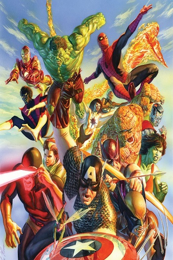
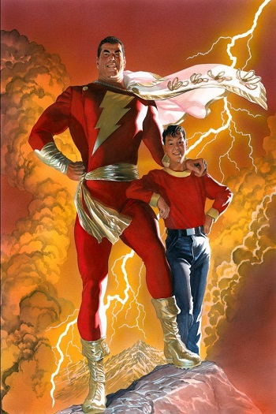
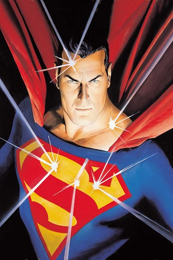

Jason Fabok
Jason Fabok (born April 14, 1985) is a Canadian comic-book artist. He has worked almost exclusively for DC Comics for the entirety of his career. His work has been featured in acclaimed series such as Batman, Detective Comics, Justice League, and the Eisner Award-winning Swamp Thing: The Talk of the Saints short story.Fabok graduated from St. Clair College's Tradigital Animation program in 2007. He then attended the Word of Life Bible College in Owen Sound for a year, an experience that furthered his interest to pursue a career as a comic artist. After becoming aware that legendary illustrator David Finch lived in his same town, Fabok sent him his portfolio. Finch agreed to mentor him and put him through a six-month-long "boot camp", teaching him everything from anatomy, to backgrounds and buildings. After six months Finch suggested Fabok sending his new portfolio to DC Comics.


